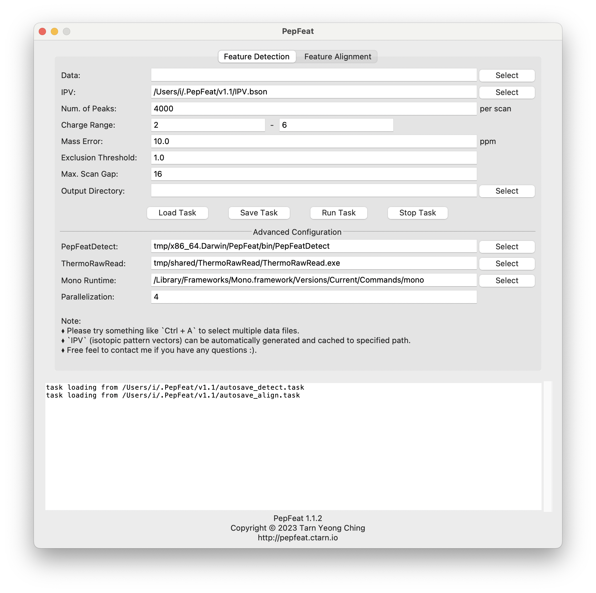

PepFeat is not maintained anymore, and has been merged into PepPre.
PepFeat is used to detect peptide features from LC-MS map. It is based on PepPre.
Usage
- PepFeat will generate the isotopic pattern vectors (IPV) on the first run, and it may cost minutes.
Release

{{ release }}
Q&A
-
macOS says: “PepFeat.app” is damaged and can’t be opened. You should move it to the Trash.
Please run `sudo xattr -r -d com.apple.quarantine [path/to/PepFeat.app]` in terminal. -
Windows Security stops the software and deletes the .exe file.
The software is packaged using PyInstaller, and can be detected as virus by mistake on Windows (see the issue). Please restore the deleted file from `Protection History`, and Windows Security should not stop or delete it again. Otherwise, please add the software to white list. You can also package the software from source yourself.
Source
Citation
BibTeX
@article{Tarn2023PepPre,
author = {Ching Tarn and Yu-Zhuo Wu and Kai-Fei Wang},
title = {PepPre: Promote Peptide Identification Using Accurate and Comprehensive Precursors},
journal = {Journal of Proteome Research},
doi = {10.1021/acs.jproteome.3c00293},
url = {https://doi.org/10.1021/acs.jproteome.3c00293},
year = {2023},
type = {Journal Article}
}